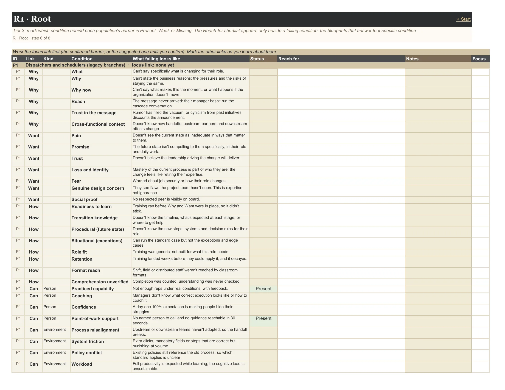

User guide · The tabs
1 tab: R1 Root.
Root out the specific condition that is failing. Each link depends on a handful of conditions (Desire, for example, on Pain, Promise and Trust). Marking which ones are Weak or Missing is what unlocks the shortlist of blueprints that answer them, and only those.
Context (opens in a new tab): Awareness: Build a Change Campaign · Desire: Resistance Is a Design Problem · Knowledge: Why Most Training Programs Are Delivered in the Wrong Order · Ability: Where Change Programs Actually Stall · Reinforcement: The Phase That Determines Whether Change Sticks
On this page: R1 Root
Tier 3: mark which condition behind each population's barrier is Present, Weak or Missing. The Reach-for shortlist appears only beside a failing condition: the blueprints that answer that specific condition.
For the focus link, mark each condition Present, Weak or Missing. The Reach for list appears only beside a Weak or Missing condition: the blueprints and Operator's Lens practices that answer that condition.
The first Missing condition on the focus link becomes the population's primary failing condition on the views and the Sponsor Brief. Ability's conditions split into Person and Environment, because sometimes the barrier has nothing to do with the person.

Reads from: F1 Setup F2 Populations I2 Confirm Population Card
| Column | Type | What it means | Values |
|---|---|---|---|
| Work the focus link first (the confirmed barrier, or the suggested one until you confirm). Mark the other links as you learn about them. | |||
| ID | fixed | ||
| Link | computed | ||
| Kind | fixed | Ability conditions split into Person and Environment: sometimes the barrier has nothing to do with the person's knowledge or motivation (Ability article). | |
| Condition | fixed | ||
| What failing looks like | fixed | ||
| Status | input | PresentWeakMissing | |
| Reach for | computed | The blueprints and Operator's Lens practices that answer this condition. It appears only when the condition is Weak or Missing. | |
| Notes | input | ||
| Focus | computed | ||
Every condition R1 Root lists, and the shortlist that appears beside it when it is Weak or Missing.
| Condition | What failing looks like | Reach for |
|---|---|---|
| What | Can't say specifically what is changing for their role. | AW-3 Manager Toolkit · AW-5 Change Impact Roadshow |
| Why | Can't state the business reasons: the pressures and the risks of staying the same. | AW-8 Cost of the Status Quo Evidence Package · AW-4 Executive Storytelling Series |
| Why now | Can't say what makes this the moment, or what happens if the organization doesn't move. | AW-4 Executive Storytelling Series · AW-8 Cost of the Status Quo Evidence Package |
| Reach | The message never arrived: their manager hasn't run the cascade conversation. | AW-2 Awareness Campaign Architecture · AW-3 Manager Toolkit · AW-7 Awareness Heat Map |
| Trust in the message | Rumor has filled the vacuum, or cynicism from past initiatives discounts the announcement. | AW-6 Listening Before Broadcasting · AW-2 Awareness Campaign Architecture · OL-1 "What's different this time" evidence |
| Cross-functional context | Doesn't know how handoffs, upstream partners and downstream effects change. | AW-5 Change Impact Roadshow · OL-2 Downstream-effects coverage |
| Condition | What failing looks like | Reach for |
|---|---|---|
| Pain | Doesn't see the current state as inadequate in ways that matter to them. | DE-2 Engineering Constructive Dissatisfaction · AW-8 Cost of the Status Quo Evidence Package · OL-6 Honest, concrete stakes |
| Promise | The future state isn't compelling to them specifically, in their role and daily work. | DE-1 WIIFM Matrix · DE-5 Personal Impact Dialogues |
| Trust | Doesn't believe the leadership driving the change will deliver. | DE-7 Pilot Strategy as a Desire Tool · DE-4 Change Champion Network · OL-15 Visible leadership behavior |
| Loss and identity | Mastery of the current process is part of who they are; the change feels like retiring their expertise. | DE-6 Visible Loss Acknowledgment · OL-4 Identity continuity |
| Fear | Worried about job security or how their role changes. | DE-5 Personal Impact Dialogues · DE-6 Visible Loss Acknowledgment |
| Genuine design concern | They see flaws the project team hasn't seen. This is expertise, not ignorance. | OL-5 Involve skeptics in solution design · DE-7 Pilot Strategy as a Desire Tool · DE-3 Resistance Mapping Workshop |
| Social proof | No respected peer is visibly on board. | DE-4 Change Champion Network · DE-8 Recognition for Participation |
| Condition | What failing looks like | Reach for |
|---|---|---|
| Readiness to learn | Training ran before Why and Want were in place, so it didn't stick. | KN-1 Gate Training on Awareness and Desire |
| Transition knowledge | Doesn't know the timeline, what's expected at each stage, or where to get help. | KN-7 Knowledge Map · AW-3 Manager Toolkit |
| Procedural (future state) | Doesn't know the new steps, systems and decision rules for their role. | KN-2 Role-Based Learning Architecture · KN-3 Role Academy · KN-6 Digital Adoption Platform |
| Situational (exceptions) | Can run the standard case but not the exceptions and edge cases. | KN-4 Microlearning Library (90-Day Companion) · OL-7 Exception scenarios in the curriculum · KN-5 Just-in-Time Sequencing |
| Role fit | Training was generic, not built for what this role needs. | KN-2 Role-Based Learning Architecture · KN-7 Knowledge Map |
| Retention | Training landed weeks before they could apply it, and it decayed. | KN-5 Just-in-Time Sequencing |
| Format reach | Shift, field or distributed staff weren't reached by classroom formats. | OL-8 Point-of-work formats · OL-9 Internal SMEs as trainers · KN-4 Microlearning Library (90-Day Companion) |
| Comprehension unverified | Completion was counted; understanding was never checked. | KN-8 Check for Understanding |
| Condition | What failing looks like | Reach for |
|---|---|---|
| Practiced capability Person | Not enough reps under real conditions, with feedback. | AB-2 Floor Walkers / Super Users · AB-5 Shadowing and Reverse Shadowing · AB-4 Ability Sprints |
| Coaching Person | Managers don't know what correct execution looks like or how to coach it. | AB-3 Coaching Plans Tied to Observation · OL-12 Standard work as the Ability baseline |
| Confidence Person | A day-one 100% expectation is making people hide their struggles. | AB-6 Progressive Proficiency Expectations |
| Point-of-work support Person | No named person to call and no guidance reachable in 30 seconds. | AB-1 Performance Support Architecture · KN-4 Microlearning Library (90-Day Companion) |
| Process misalignment Environment | Upstream or downstream teams haven't adopted, so the handoff breaks. | AB-7 Barrier Removal (Friction Audit) · AW-5 Change Impact Roadshow |
| System friction Environment | Extra clicks, mandatory fields or steps that are correct but punishing at volume. | AB-7 Barrier Removal (Friction Audit) |
| Policy conflict Environment | Existing policies still reference the old process, so which standard applies is unclear. | AB-7 Barrier Removal (Friction Audit) · RE-5 Policy and SOP Lock-In |
| Workload Environment | Full productivity is expected while learning; the cognitive load is unsustainable. | AB-7 Barrier Removal (Friction Audit) |
| Coverage Environment | Support covers the day shift or one site; nights, field and other sites are on their own. | OL-11 Support for every shift and site · AB-2 Floor Walkers / Super Users |
| Visibility Person | Nobody can see who is struggling, or at which step. | AB-8 Performance Dashboards for Coaching |
| Condition | What failing looks like | Reach for |
|---|---|---|
| Measurement | Dashboards and scorecards still measure the old process. | RE-2 Update the Metrics · RE-8 Process Mining for Compliance |
| Structure | Old SOPs, templates and system paths are still available. | RE-5 Policy and SOP Lock-In |
| Ownership | Nobody owns the change after the project closes. | RE-3 Governance Council |
| People systems | The new process isn't part of performance reviews or manager accountability. | RE-6 Performance Management Integration |
| Onboarding | New hires are onboarded into the hybrid, and become vectors for reversion. | OL-14 New-state-as-baseline onboarding · RE-5 Policy and SOP Lock-In |
| Leadership behavior | Leaders use old terms, tolerate the old way, or let compliance slide for their reports. | OL-15 Visible leadership behavior |
| Narrative and recognition | The new way's wins are invisible; nobody tells the stories. | RE-4 Story-Based Reinforcement · DE-8 Recognition for Participation |
| Cadence | Reinforcement was planned for weeks, not the six to eighteen months it takes. | RE-1 Reinforcement Calendar · RE-7 30-60-90 Day Audits · OL-13 Control plan with response triggers |